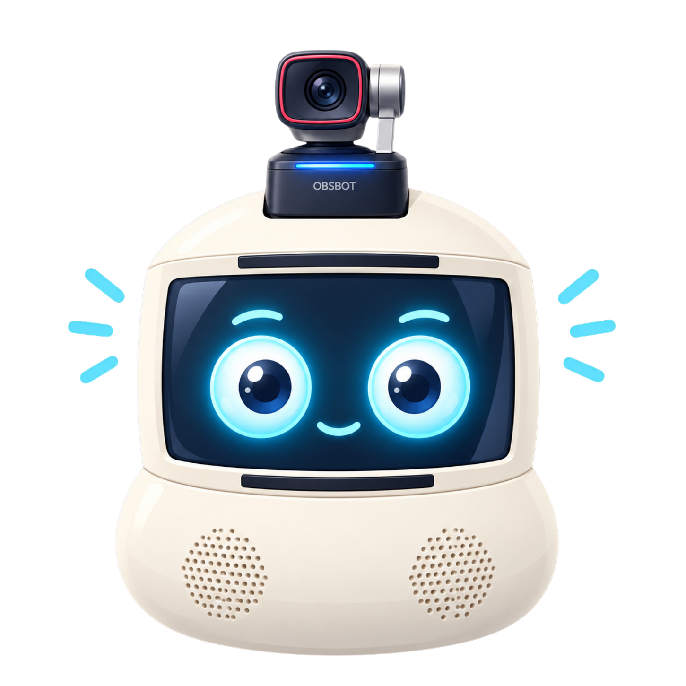

Research concept and architecture
Defined the multimodal specialist-agent, episodic-memory, uncertainty, evidence-fusion, conversational-response, expressive robot-head, and symbolic-task pipeline.
CompletedFCAI AI Day 2026 · Research in progress Currently Under Development
Modality-specific transformer agents, an episodic-memory retrieval agent, and a Bayesian uncertainty specialist jointly analyse the user’s request. An aggregator fuses their evidence to generate the robot’s conversational response and a grounded symbolic task representation.

This percentage is a public-facing estimate of overall research and manuscript progress. It is updated only when a meaningful milestone advances.
Defined the multimodal specialist-agent, episodic-memory, uncertainty, evidence-fusion, conversational-response, expressive robot-head, and symbolic-task pipeline.
CompletedThe abstract has been accepted for poster presentation at FCAI AI Day 2026, and the research poster is currently being developed.
OngoingImplementing and validating the robotless multimodal interaction pipeline, ambiguity-aware evidence fusion, conversational output, and grounded symbolic task representation.
In ProgressEvaluate grounding, clarification behaviour, transparency, usability, uncertainty handling, and safe task interpretation.
PlannedConsolidate the architecture, experimental method, results, discussion, limitations, and future work into the full paper.
PlannedPrepare and submit the final manuscript for peer review.
Planned